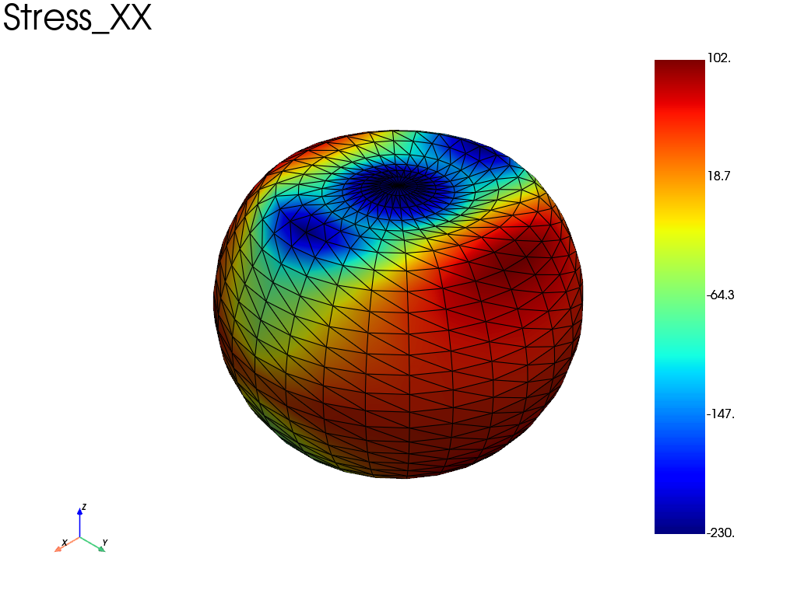

Note
Go to the end to download the full example code.
Compression of a ping pong ball
Example that show how to use plate elements with a pressure load.
import fedoo as fd
import pyvista as pv
import numpy as np
The problems parameters
E = 2e3 # MPa
nu = 0.37
radius = 20 # mm
thickness = 0.45 # mm
pressure = 10 # MPa
Create a simple sphere mesh using pyvista.
mesh = fd.Mesh.from_pyvista(pv.Sphere(radius=radius))
Define a linear isotropic material and an homogeneous shell section
material = fd.constitutivelaw.ElasticIsotrop(E, nu, name="Material")
shell_section = fd.constitutivelaw.ShellHomogeneous("Material", thickness)
Define the weakform and associated assembly for plate model For plate elements, we first need to create a 3D modeling space
fd.ModelingSpace("3D")
wf = fd.weakform.PlateEquilibrium(shell_section)
solid_assembly = fd.Assembly.create(wf, mesh)
Select mesh elements where we will apply the pressure. The mesh.find_elements method is used with an arbitrary exression. Here we select all elements whose z coordinates are less that 3mm from minimal or maximal z value (sphere extremity along the z axis.
boundaries = mesh.find_elements(
f"Z>{mesh.bounding_box.zmax-3} or Z<{mesh.bounding_box.zmin+3}"
)
Now we build the pressure load by extracting the loaded surface mesh. For nonlinear analyses, the pressure is added as an external Neumann boundary condition so that the residual normalization sees the applied load.
pressure_assembly = fd.constraint.Pressure(
mesh.extract_elements(boundaries),
pressure,
)
Define a nonlinear analysis and solve the problem.
Note
To improve numerical stability, a few displacement boundary conditions are added to remove rigid-body motions. These constraints do not affect the strain/stress solution because they only suppress the nullspace modes. Without them, the unconstrained problem is singular; some solvers may still return a usable strain/stress field, but the displacement field can contain arbitrary rigid-body motion.
assembly = solid_assembly
pb = fd.problem.Linear(assembly)
pb.bc.add(pressure_assembly)
nodes = mesh.nodes
node_a = int(np.argmin(nodes[:, 0]))
node_b = int(np.argmax(nodes[:, 0]))
node_c = int(np.argmax(nodes[:, 1]))
pb.bc.add("Dirichlet", node_a, "Disp", 0)
pb.bc.add("Dirichlet", node_b, ["DispY", "DispZ"], 0)
pb.bc.add("Dirichlet", node_c, "DispZ", 0)
pb.solve()
Extract the results: position = 1 is set for the surface along the positif direction of the normal vector (0 is the mean plane). The strains and stresses components are defined in the element local coordinate system (mesh.get_element_local_frame()).
res = pb.get_results(solid_assembly, ["Disp", "Rot", "Stress", "Strain"], position=1)
pl = pv.Plotter()
res.plot("Stress", component="XX", data_type="Node", plotter=pl)
pl.view_isometric()
pl.show()

Total running time of the script: (0 minutes 0.277 seconds)